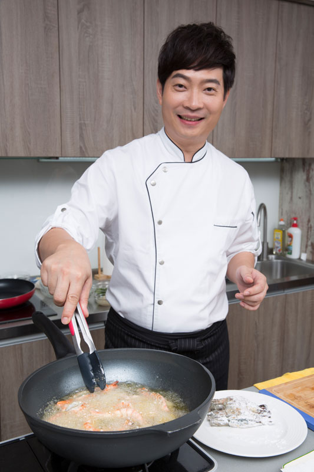
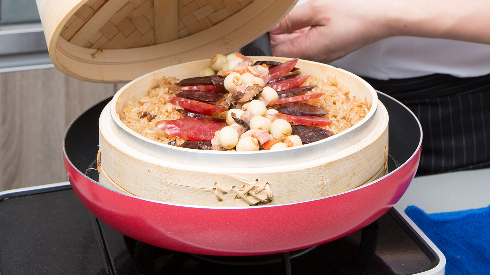
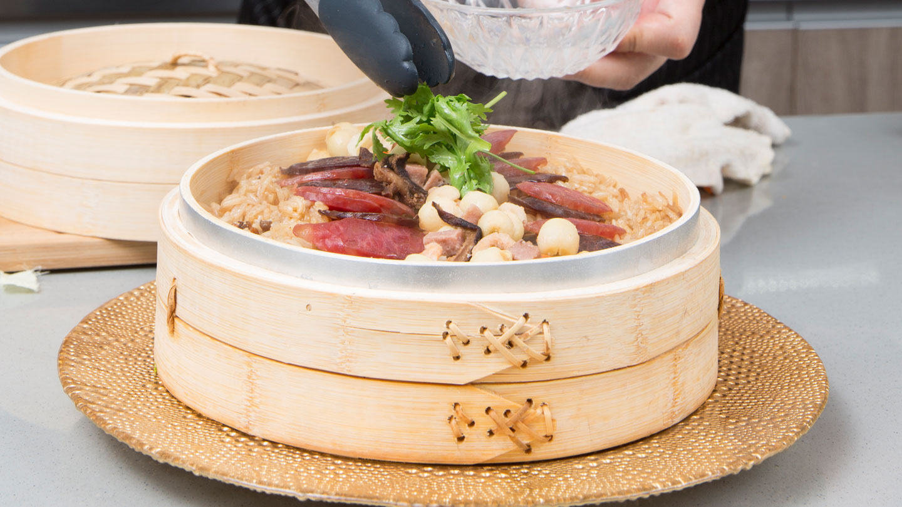
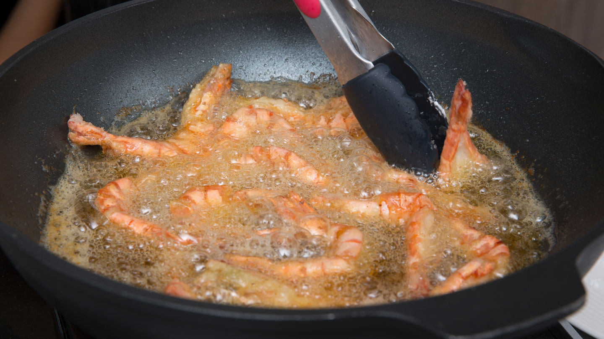
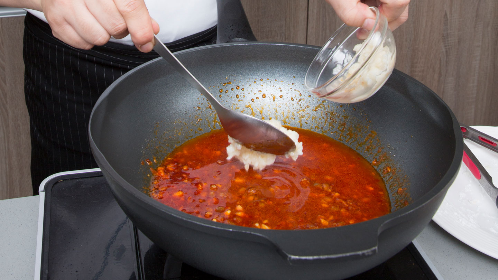
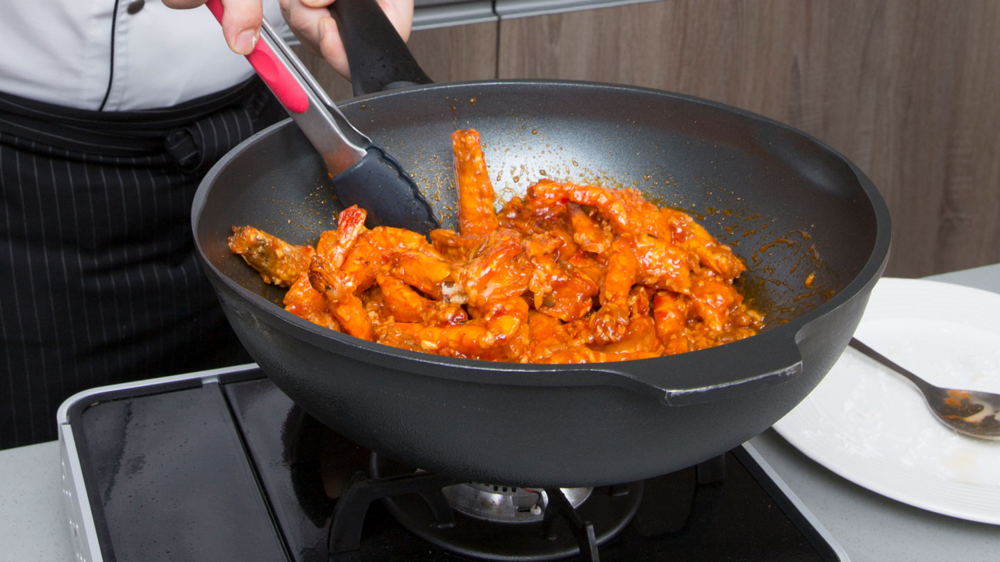

Chef Oil 主廚精選
主婦必學年菜
溫馨圍爐 共享開運好菜
開心過年，好運一整年！圍爐要吃的幸福又健康，在料理時就要注重「全溫域料理」概念，龍師傅表示：「現代人對食物除了要求美味還講究健康，想要做出一桌大廚級年菜，首要條件就是，家中必須備有適合低溫、中溫及高溫料理的三大類油品。」需要涼拌或做蘸醬的料理，用第一道冷壓橄欖油來增添清香口感；中式料理需要大火快炒，使用中溫的葡萄籽油，保留食物原有鮮味；年菜有許多大火油炸料理，選擇高溫的玄米油，就不會產生噴油與油煙過大的問題。主婦們輕鬆在家也能做出飯店等級功夫菜喔～

RECIPES
1
胡麻和風鮮蔬鮑魚

油品
Chef Oil 第一道冷壓橄欖油 (Extra Virgin Olive Oil)
食材
-
九孔鮑8粒
-
綜合生菜100g
-
秋葵4支
-
小番茄5顆
-
新鮮橙肉30g

調味品
柴魚醬油、味醂、新鮮檸檬汁、日式胡麻醬
作法
Step 1
九孔鮑放入熱水（水溫約 85 度）中浸泡 20 分鐘後，與綜合蔬菜、秋葵、小番茄一起放至盤中備用。

Step 2
將所有調味料拌勻，調製成胡麻和風醬。

Step 3
將胡麻和風醬淋上即完成。

RECIPES
2
八寶干貝臘味米糕
油品
Chef Oil 葡萄籽油 (Grapeseed Oil)
食材
-
長糯米200g
-
肝腸1條
-
臘腸1條
-
新鮮蓮子50g
-
蝦米30g
-
火腿丁30g
-
香菇絲30g
-
香菜葉少許

調味品
醬油、白糖、鹽、白胡椒粉、水
作法
Step 1
將浸泡一晚的糯米放入蒸籠用大火蒸 20 分鐘後取出，與炒香的香菇、蝦 米、蓮子、火腿丁配料，一起攪拌均勻。

Step 2
將蒸好的肝腸、臘腸切片後與拌好的糯米一起放入蒸籠中繼續蒸 15 分鐘。

Step 3
放上香菜葉即完成。

RECIPES
3
酒釀紅袍油悶蝦
油品
Chef Oil玄米油 (Rice Bran Oil)
食材
-
草蝦12隻
-
蔥花30g
-
薑末20g
-
蒜末20g
-
地瓜粉4大匙

調味品
辣豆瓣醬、白糖、酒釀、番茄醬、太白粉
作法
Step 1
草蝦開背去腸泥，沾上地瓜粉備用。取一油鍋倒入玄米油，以中大火熱油 2 至 4 分鐘後，將草蝦放入鍋中，炸至金黃色取出備用。

Step 2
炒香蒜末、薑末後，放入所有調味料煮滾。

Step 3
將草蝦倒入煮滾的調味料中拌炒均勻，撒上蔥花即完成。
